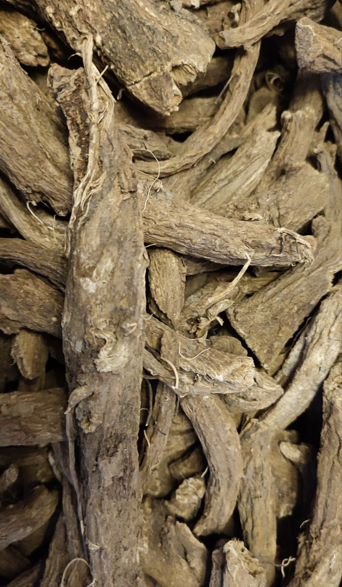

Mùxiāng · Costus Root木香
Aucklandiae Radix · Qi-regulating herbsAucklandiae Radix · 行气药

.jpg){kind=link}


- Flavour · nature性味
- acrid, bitter; warm辛、苦，温
- Channels归经
- Spleen, Stomach, Large Intestine, Triple Energizer, Gallbladder脾、胃、大肠、三焦、胆经
- Direction升降浮沉
- Its pungent aroma promotes the movement of qi, while its bitter and warm nature facilitates downward movement. It is particularly useful for regulating qi stagnation in the spleen and stomach, relieving abdominal distension and pain, and regulating intestinal qi stagnation associated with tenesmus. Combined with tonics, it helps prevent stagnation caused by enriching medicines.辛香走窜，苦温通降，善于行气止痛，尤长于调理脾胃气滞；既能疏通中焦气机、消除脘腹胀满，又能调理大肠气滞、缓解泻痢后重。与补益药配伍，可行气醒脾，防止补药壅滞。
- Toxicity毒性
- Non-toxic无毒
- Dose (pharmacopoeia)用量（药典）
- 3–6 g (ceiling 6 g)（上限 6 克）
Taken as a decoction. Usually used raw; the bran-wrapped, baked form is used traditionally for diarrhoea with abdominal pain when an astringent effect is desired. It contains volatile constituents and should not be decocted for an extended period.煎服。一般生用；用于泄泻腹痛、需要实肠止泻时可煨用。含挥发性成分，不宜久煎。 - Pregnancy孕期
- Caution in pregnancy孕妇慎用 The 2020 Chinese Pharmacopoeia does not explicitly list pregnancy as a contraindication for Mu Xiang, but Health Canada's TCMI monograph advises against its use during pregnancy and breastfeeding. Because pregnancy safety data are insufficient, pregnant and breastfeeding individuals should avoid self-administering Mu Xiang or products containing it.《中国药典》2020年版对木香的使用注意未将孕妇列为明确禁忌，但加拿大卫生部TCMI专论明确要求孕期及哺乳期勿用。考虑到孕期安全性资料不足，孕妇及哺乳期人群应避免自行使用木香及含木香的产品。
- Health Canada加拿大卫生部
- Health Canada: monograph加拿大卫生部：有专论 Health Canada's Natural and Non-prescription Health Products Directorate (NNHPD) includes Saussurea costus (Mu Xiang, Radix Aucklandiae) in its Traditional Chinese Medicine Ingredients monograph dated May 29, 2026, under Table 1: General Medicinal Ingredients, rather than the restricted ingredients in Tables 3 or 4. The monograph requires product labelling to state: do not use during pregnancy or breastfeeding; consult a healthcare professional before use if taking prescription medicines or if experiencing a serious disease or acute infection; and discontinue use and seek medical attention if symptoms persist or worsen. Inclusion in the TCMI ingredient monograph does not mean that every specific Mu Xiang product has received a Canadian market authorization, nor does it automatically authorize every source, dosage form or use.加拿大卫生部天然及非处方保健品局（NNHPD）的传统中药成分专论（TCMI，2026年5月29日）收录Saussurea costus（Mu Xiang，Radix Aucklandiae），列于表1（Table 1：一般药用成分，General Medicinal Ingredients），不是表3或表4的受限制成分。专论要求产品标注：孕期或哺乳期勿用；正在服用处方药、有严重疾病或急性感染者，使用前咨询医务人员；症状持续或加重时停止使用并就医。列入TCMI成分专论不等于任何具体木香产品已经获得加拿大卫生部上市许可，也不代表所有来源、剂型及用途均自动获准。
- Conservation资源与保护
- Saussurea costus is not among the prohibited medicinal materials specifically identified in the reference examples, such as rhinoceros horn, tiger bone, pangolin scales, musk or bear bile. The conservation and international trade status of particular wild populations should nevertheless be checked against current local wildlife protection lists and the CITES database. Medicinal materials should be sourced through legal supply chains with verified botanical identity and origin.木香（Saussurea costus）不属于本档所依据资料中明确列出的犀角、虎骨、穿山甲、麝香、熊胆等禁用药材类别。具体野生种群及国际贸易保护状态仍应以所在地现行野生动植物保护名录和CITES数据库核验。药用原料应核实植物基原、产地及合法供应链，避免以其他近缘或名称相似的根类药材冒充。
- Source来源
- Saussurea costus (Falc.) Lipsch.. The dried root of Saussurea costus, a member of the Asteraceae family.Saussurea costus (Falc.) Lipsch.（云木香，亦称木香）。菊科植物木香的干燥根。
Traditional actions and indications功效与主治（传统）
🏛 Traditional statements, not efficacy claims; the modern evidence is graded further down.以下为传统说法，不是疗效主张；现代证据见下文分级。
- Regulates qi and relieves pain行气止痛
- Strengthens the spleen and promotes digestion健脾消食
Chest and epigastric distension or pain, abdominal bloating and pain, and belching associated with qi stagnation in the spleen and stomach; diarrhoea or dysentery with tenesmus; indigestion, abdominal fullness and poor appetite; and impaired digestion with concurrent qi stagnation in a weak spleen and stomach. Bran-wrapped, baked Mu Xiang is more astringent and is traditionally used for diarrhoea with abdominal pain.脾胃气滞所致的胸脘胀痛、腹胀腹痛、嗳气；泻痢里急后重；食积不消、脘腹胀满、不思饮食；脾胃虚弱、运化不健而兼有气滞者。煨木香偏于实肠止泻，适用于泄泻腹痛。
How to recognise it怎么认
Growing植株 A tall perennial herb with a thick, cylindrical or irregularly spindle-shaped root possessing a strong characteristic aroma. The stem is erect and branches in its upper portion. Basal leaves are large, long-stalked, broadly ovate to triangular-ovate, with irregularly toothed or lobed margins. Upper stem leaves become progressively smaller. Purple to dark reddish-purple flower heads occur at the branch tips. The fruit is an achene. The medicinal part is the thick underground root.多年生高大草本植物。根粗壮，呈圆柱形或不规则纺锤形，具有浓烈而特殊的芳香气味。茎直立，上部多分枝；基生叶较大，具长柄，叶片宽卵形或三角状卵形，边缘有不规则齿裂；茎生叶逐渐变小，通常有明显叶柄或抱茎特征。头状花序生于枝端，花冠紫红色或暗紫色。果实为瘦果。药用部分为地下粗壮的根。
Decoction pieces饮片 The dried slices are generally round, nearly round or irregularly thick longitudinal sections. Short cylindrical sections and split root pieces may also occur. The outer surface is yellowish-brown to greyish-brown, rough, and marked by longitudinal wrinkles and root scars. The cut surface ranges from yellowish-white to greyish-yellow or light brown, often showing distinct radial striations and scattered brownish-yellow oil spots; the central area may be darker. The root is firm and difficult to break, with a slightly fibrous fracture. It has a strong aromatic smell and a bitter, slightly pungent taste. Bran-wrapped, baked slices are generally darker and have a relatively milder aroma.饮片多呈圆形、类圆形或纵切的不规则厚片，也可见短圆柱形段及纵剖瓣片。外表面黄棕色至灰棕色，粗糙，有纵皱纹及根痕。切面黄白色至灰黄色或浅棕黄色，常可见明显放射状纹理及散在棕黄色油点，中央部分有时颜色较深。质坚实，不易折断，断面略显纤维性。气芳香浓烈，味苦，微辛。煨木香表面颜色较深，气味相对柔和。
No photo of the slices; the dried picture shows whole roots.缺切片饮片照；现有为整根干品。
Processing炮制
- Raw Mu Xiang生木香：: Unprocessed root with a stronger pungent aroma, traditionally used primarily to regulate qi and relieve pain associated with abdominal or chest distension, qi stagnation and food accumulation.未经煨制，辛香气味较浓，行气止痛作用较为突出，常用于胸腹胀痛、气滞及食积。
- Bran-wrapped, baked Mu Xiang煨木香：: Prepared by baking the root with wheat bran or similar processing materials. Its dispersing quality is relatively moderated, and it is traditionally preferred for its intestinal astringent action in diarrhoea with abdominal pain.以麦麸等辅料煨制，辛散之性相对缓和，偏于实肠止泻，常用于泄泻腹痛。
Cautions and incompatibilities使用注意与配伍禁忌
Use cautiously in people with yin deficiency and depleted body fluids. It is generally unsuitable as a standalone pungent, warm qi-regulating herb for people with qi deficiency without stagnation or pronounced internal dryness and heat. This site advises caution in pregnancy (neither the pharmacopoeia nor the textbook lists it); Health Canada's TCM ingredient monograph specifically advises against use during pregnancy and breastfeeding. Avoid prolonged decoction because volatile constituents may be lost. Seek professional advice if adverse symptoms occur. Distinguish medicinal Mu Xiang from similarly named materials such as Tu Mu Xiang and other commercial substitutes; the botanical identity should not be determined by the trade name alone.阴虚津亏者慎用，气虚无滞、脏腑燥热者不宜单纯使用辛温行气之品。孕期从严按慎用（药典与教材未列孕期条）；加拿大卫生部木香相关传统中药成分专论明确要求孕期及哺乳期勿用。煎煮不宜久煎，以免挥发性成分损失。服用后如出现不适，应咨询医务人员。木香与广木香、土木香等名称相近药材应注意鉴别，不能仅凭商品名称认定基原。
Interactions with medicines与西药的相互作用
The available sources do not provide sufficient reliable evidence to establish clinically confirmed interactions between Mu Xiang root and specific Western medicines. Computational molecular docking, predicted pharmacokinetic parameters, and cell or animal experiments cannot establish drug interactions in humans. Health Canada advises people taking prescription medicines to consult a healthcare professional before use. This absence of confirmed evidence does not establish that Mu Xiang is free of all drug interactions.目前提供的可用来源中，没有足以确认木香饮片与具体西药之间临床相互作用的可靠证据。有关木香的计算机分子对接、药代参数预测及细胞或动物实验，不能直接认定为人体药物相互作用。加拿大卫生部要求正在服用处方药者使用前咨询医务人员。不能据此断言木香与所有西药均无相互作用。
Modern research, graded现代研究（分级）
- E2 A 2024 single-blind randomized clinical study compared Zarawand Mudaharaj (Aristolochia rotunda) with Qust (Saussurea lappa, a botanical source associated with Mu Xiang) for primary dysmenorrhea. The abstract concluded that preliminary findings supported the traditional use of both materials. This was a human clinical study, but the evidence is preliminary, and its findings cannot be treated as definitive evidence for the independent efficacy of Chinese Pharmacopoeia-standard Mu Xiang root.2024年一项单盲随机临床研究比较了阿拉伯传统药物Zarawand Mudaharaj（Aristolochia rotunda）与Qust（Saussurea lappa，即木香相关基原药材）用于原发性痛经的情况。摘要结论认为初步研究结果支持两种药材在原发性痛经中的传统应用。该研究涉及人体，但属于初步临床证据，且研究采用的两种药材不能简单等同于中国药典标准木香饮片的独立疗效证据。
- E4 A 2026 review of Saussurea costus covers traditional uses, phytochemistry, pharmacokinetics, pharmacology and practical applications. Its abstract describes broad pharmacological research potential, but the available conclusion does not establish specific clinical indications, dosages or therapeutic efficacy in humans.2026年关于Saussurea costus的综述涉及传统用途、植物化学成分、药代动力学、药理学及实际应用。摘要将该植物描述为具有较广泛药理研究潜力，但所提供的摘要结论不足以支持具体临床适应证、剂量或人体疗效判断。
- E4 A 2017 study investigated a topical preparation combining Saussurea costus root with Thuja orientalis in HaCaT cells and Nc/Nga mice with atopic dermatitis-like skin lesions. The research concerned a combined topical preparation and included cell and animal experiments; it cannot establish clinical effects of orally administered Mu Xiang root alone in humans.2017年研究以Saussurea costus根与侧柏（Thuja orientalis）联合制备的外用材料为研究对象，在HaCaT细胞和Nc/Nga小鼠模型中考察其对特应性皮炎样皮肤病变的作用。研究对象为联合外用制剂，且包含细胞与动物实验，不能据此推断木香单味内服饮片的人体临床效果。
- E4 A 2014 study examined a homofructosan obtained from Saussurea costus and the anti-complement activity of its sulfated derivatives. The research materials were extracted polysaccharides and chemically modified derivatives, not the Mu Xiang crude drug itself, and the findings cannot establish clinical effects.2014年研究分析了来源于Saussurea costus的同聚果聚糖及其硫酸化衍生物，并考察后者的抗补体活性。研究对象为提取的多糖及其化学修饰衍生物，不是木香饮片本身，不能据此推断临床应用效果。
- E4 A 2022 computational study investigated bioactive molecules from Saussurea costus using reverse molecular docking, molecular dynamics simulations and ADMET pharmacokinetic predictions. The abstract specifically reported Lipinski-related parameters for the Cynaropicrin–6LU7 complex. This is computational evidence, not a human pharmacokinetic or drug-interaction study of Mu Xiang root.2022年一项计算机研究对Saussurea costus植物来源的生物活性分子进行反向分子对接、分子动力学模拟及ADMET药代参数预测。摘要特别报告了Cynaropicrin与6LU7形成复合物时的Lipinski规则相关参数。这属于计算机模拟证据，不是木香饮片的人体药代或药物相互作用研究。
- E4 A 2024 study using a propylthiouracil-induced hypothyroidism rat model investigated fatty acid and glycerophospholipid metabolism in response to Saussurea costus root extract. The research concerned a root extract in rats, not the crude Mu Xiang root used in humans, and cannot establish human clinical efficacy or safe dosages.2024年一项丙硫氧嘧啶诱导甲状腺功能减退的大鼠研究，以Saussurea costus根提取物为研究对象，考察脂肪酸及甘油磷脂代谢相关指标。研究对象是大鼠模型中的根提取物，而不是人体使用的木香饮片，不能据此推断人体临床疗效或安全剂量。
- E4 A 2022 study developed a planar bioluminescent cytotoxicity assay for authenticity screening of Saussurea costus root and evaluated the method using genetically modified human reporter cell lines. Its focus was the feasibility of the testing method, not clinical toxicity, the incidence of adverse reactions after oral Mu Xiang, or safe human dosages.2022年研究建立了用于Saussurea costus根真实性筛查的平面生物发光细胞毒性检测方法，并使用经过基因修饰的人源报告细胞系验证检测方法。研究重点是检测技术的可行性，不是木香口服后的临床毒性、人体不良反应发生率或安全剂量研究。
In the classics古籍原文
「木香味辛溫。主治邪氣，辟毒疫溫鬼，強誌，主淋露。久服不夢寤魘寐。生山谷。」——神农本草经
Shennong Bencao Jing (Divine Farmer's Materia Medica)
The Shennong Bencao Jing describes Mu Xiang as pungent and warm, emphasizing its aromatic and qi-regulating traditional characteristics. Expressions such as 'treating pathogenic influences' and 'warding off pestilence and harmful spirits' belong to the terminology of ancient materia medica and should not be interpreted as evidence of modern antimicrobial or antiviral effects.《神农本草经》记载木香味辛温，传统上强调其芳香辟秽、行气的特性。原文中的「主治邪气」「辟毒疫温鬼」属于古代本草语言，应结合当时的医学认识理解，不能直接等同于现代医学所说的抗感染或抗病毒作用。
Where it is used: the web串联：它在哪些方里、连到哪里
Later formulas (Song to Qing)时方（宋元明清）
| Formula方 | Role角色 | Dose: original / today剂量：原书／今用 | Partners in the formula同方配伍 |
|---|---|---|---|
| Restore the Spleen Decoction归脾汤 | Assistant佐 | original text: see the Chinese original八分 | Rénshēn (Ginseng (Asian))人参 · Bai Zhu (white atractylodes rhizome)白术 · Fu Shen (poria with hostwood)茯神 · Suan Zao Ren (sour jujube seed)酸枣仁 · Long Yan Rou (longan aril)龙眼肉 · Huángqí (Astragalus root)黄芪 · Dāngguī (Chinese Angelica Root)当归 · Yuan Zhi (polygala root)远志 · Gāncǎo (Licorice root)甘草 |
| Tangerine Seed Pill橘核丸 | Assistant佐 | original text: see the Chinese original五钱 | Ju He (tangerine seed)橘核 · Chuan Lian Zi (melia fruit)川楝子 · Hai Zao (sargassum)海藻 · Kun Bu (kelp)昆布 · Hai Dai (sea tangle)海带 · Tao Ren (peach kernel)桃仁 · Yan Hu Suo (corydalis tuber)延胡索 · Hou Po (magnolia bark)厚朴 · Zhǐshí (Immature bitter orange)枳实 · Mu Tong (akebia stem; never the aristolochia species)木通 · Rou Gui (cinnamon bark)肉桂 |
| Peony Decoction芍药汤 | Assistant佐 | original text: see the Chinese original二錢 | Báisháo (White peony root)白芍 · Dāngguī (Chinese Angelica Root)当归 · Huángqín (Baikal skullcap root)黄芩 · Coptis rhizome (Coptidis Rhizoma)黄连 · Dàhuáng (Rhubarb root and rhizome)大黄 · Areca seed (Arecae Semen)槟榔 · Cinnamon bark (Cinnamomi Cortex)肉桂 · Gāncǎo (Licorice root)甘草 |
| Bolster the Spleen Beverage实脾饮 | Assistant佐 | original text: see the Chinese original此处未单列分量（须对纸本） | Bai Zhu (white atractylodes)白术 · Fúlíng (Poria)茯苓 · Gāncǎo (Licorice root)甘草 · Hou Po (magnolia bark)厚朴 · Da Fu Pi (areca peel)大腹皮 · Cao Dou Kou (alpinia seed)草豆蔻 · Mu Gua (Chinese quince)木瓜 · Fùzǐ (Aconite lateral root (processed))附子 · Gānjiāng (Dried ginger)干姜 |
| Costusroot and Amomum Six Gentlemen Decoction香砂六君子汤 | Assistant佐 | original text: see the Chinese original原文未注 | Rénshēn (Ginseng (Asian))人参 · Baizhu (white atractylodes rhizome)白术 · Fúlíng (Poria)茯苓 · Gāncǎo (Licorice root)甘草 · Chénpí (Dried tangerine peel)陈皮 · Bànxià (Pinellia tuber)半夏 · Sharen (amomum fruit)砂仁 |
Folk and single-herb remedies偏方、验方、单方
| Formula方 | Use用法 | Self-use能否自用 |
|---|---|---|
| Aucklandia, coptis and areca powder mixed with oil for external application木香黄连槟榔末油调外敷（痈疽疮疖） | External use外用 | Literature record only: not advised for self-use仅作文献记录，不建议自行使用 |
Patterns reached through these formulas经由这些方连到的证
- Heart-spleen deficiency心脾两虚 ← Restore the Spleen Decoction归脾汤Self-massage自我按摩 Ten minutes before bed: a self-massage routine for restless nights睡前十分钟：给睡不着的夜晚一套按摩Qigong功法 Liuzijue (Six Healing Sounds)六字诀
- Damp-heat dysentery湿热痢疾 ← Peony Decoction芍药汤
- Spleen-stomach qi deficiency脾胃气虚 ← Costusroot and Amomum Six Gentlemen Decoction香砂六君子汤
Exam notes (HER)考点（HER）
HER essentials: (1) Mu Xiang is a qi-regulating herb with pungent and bitter flavours and a warm nature, entering the spleen, stomach, large intestine, triple burner and gallbladder channels; (2) its principal actions are regulating qi, relieving pain, strengthening the spleen and promoting digestion; (3) key traditional indications include spleen and stomach qi stagnation, epigastric distension and pain, tenesmus, and food accumulation; (4) raw Mu Xiang primarily regulates qi and relieves pain, while bran-wrapped, baked Mu Xiang is traditionally used for intestinal astringency and diarrhoea; (5) the usual dose is 3–6 g, and prolonged decoction should be avoided; (6) observe Health Canada's warning against use during pregnancy and breastfeeding; (7) distinguish Mu Xiang from similarly named materials such as Tu Mu Xiang; and (8) human clinical evidence is limited, and findings from extracts, combinations or animal experiments must not be equated with clinical evidence for standard Mu Xiang crude drug.HER重点：①木香属于行气药，性味辛、苦、温，归脾、胃、大肠、三焦、胆经；②核心功效为行气止痛、健脾消食；③重点主治脾胃气滞、胸脘胀痛、泻痢后重及食积不消；④生木香偏于行气止痛，煨木香偏于实肠止泻；⑤常用量3～6g，不宜久煎；⑥孕期与哺乳期应注意加拿大卫生部专论的禁用提示；⑦注意区分木香与土木香等名称相近药材；⑧现代人体研究数量和质量有限，不能把提取物、复方或动物实验结果直接等同于标准木香饮片的临床证据。
Sources依据
- Chinese Pharmacopoeia Commission. Pharmacopoeia of the People's Republic of China, 2020 edition, vol. I国家药典委员会《中华人民共和国药典》2020 年版一部
- Zhong Gansheng (ed.). Chinese Materia Medica (national TCM higher-education textbook series)钟赣生主编《中药学》（全国中医药行业高等教育规划教材）
- Health Canada, NHPID monograph: Traditional Chinese Medicine Ingredients (TCMI), May 29, 2026 ↗
- Sumaiya et al. Comparative Efficacy of Aristolochia rotunda L. (Zarawand Mudaharaj) and Saussurea lappa C.B. Clarke (Qust) in Primary Dysmenorrhea--A Single-Blind Randomized Clinical Study. Altern Ther Health Med. 2024 ↗
- Hajji et al. Computational approach investigation bioactive molecules from Saussurea Costus plant as SARS-CoV-2 main protease inhibitors using reverse docking, molecular dynamics simulation, and pharmacokinetic ADMET parameters. Comput Biol Med. 2022 ↗
- Wu et al. Traditional uses, Phytochemistry, pharmacokinetics, Pharmacology, and practical applications of Saussurea costus (Falc.) Lipsch: A review. J Ethnopharmacol. 2026 ↗
- Yang et al. Topical treatments of Saussurea costus root and Thuja orientalis L. synergistically alleviate atopic dermatitis-like skin lesions by inhibiting protease-activated receptor-2 and NF-κB signaling in HaCaT cells and Nc/Nga mice. J Ethnopharmacol. 2017 ↗
- Fan et al. Structure of a homofructosan from Saussurea costus and anti-complementary activity of its sulfated derivatives. Carbohydr Polym. 2014 ↗
- Dawood et al. Metabolomic insights into the therapeutic mechanisms of costus (Saussurea costus (Falc.) Lipsch.) root extract in propylthiouracil-induced hypothyroidism rat model. J Ethnopharmacol. 2024 ↗
- Mügge et al. Planar bioluminescent cytotoxicity assay via genetically modified adherent human reporter cell lines, applied to authenticity screening of Saussurea costus root. J Chromatogr A. 2022 ↗